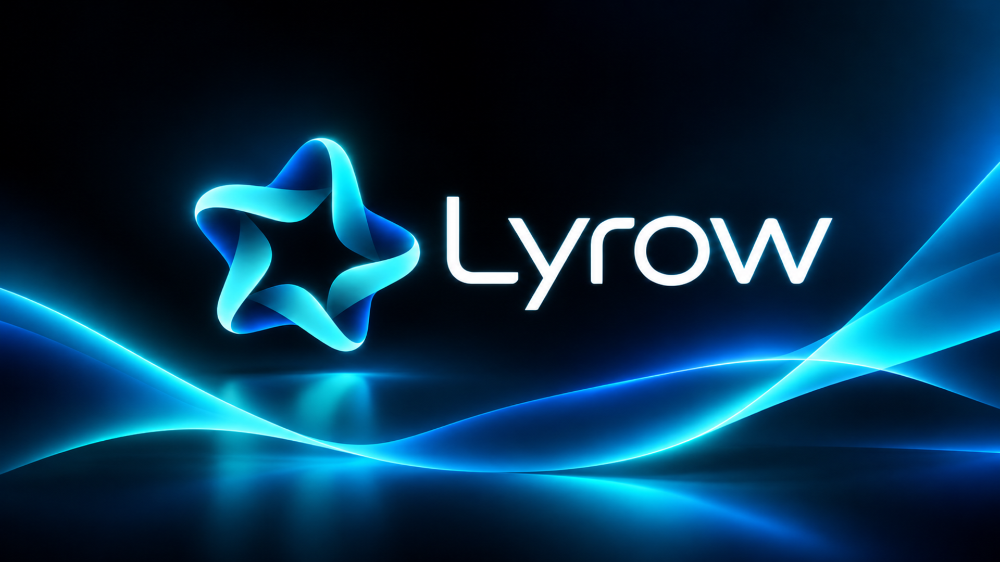

Native WinUI 3 music companion with multi-provider syllable & word synchronized lyrics, drag-and-drop source priority, Welcome V4 onboarding, Album-Adaptive Light & Dark themes, and 4-edge audio-reactive lighting.
Self-contained Windows x64 build — no separate .NET or Windows App SDK installation required.
The .msix package is currently unsigned (not yet published on the Microsoft Store); use the Windows Installer (.exe) for standard installation.
Parallel lyrics resolution across Better Lyrics (TTML), Apple Music / LiriQo, QQ Music, NetEase,
and LRCLIB — automatically upgrading to the highest genuine sync quality with a clean provider badge
(WEB, APL, LRC, QQ) and 6-dot drag-and-drop priority ordering.
A redesigned responsive 5-step Fluent onboarding experience with Expressive music reactivity enabled by default on fresh installs, plus a direct keystroke shortcut recorder in Settings.
Album-Adaptive Light & Dark themes, reliable click-to-seek and remaining duration tracking, compact Mini Player, and 4-edge audio-reactive Edge Light analyzed locally in memory with zero telemetry.
| Package | Size | SHA-256 |
|---|---|---|
| Lyrow-5.0-Setup-x64.exe | 64.84 MB | 05e0f41212fdfbee1760a2f3b68c3af1b7de4d5668fec40661fb6033bc72638e |
| Lyrow-v5.0-x64.msix (unsigned) | 94.88 MB | c339eb87d4e936d142a9b44699b052874bf5eaaf5420517759382465498747bc |